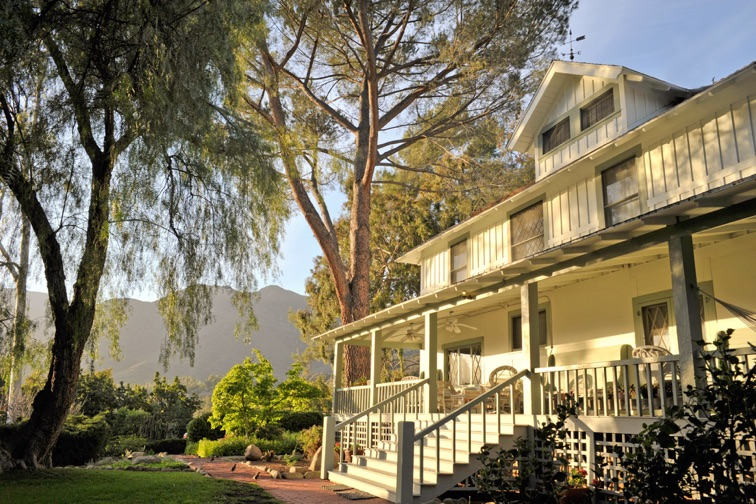
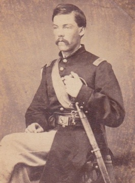
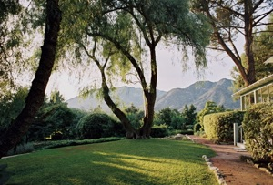

Guests
Two king beds, two queen beds and one full bed.

Ojai, California
A historic 1907 Craftsman farmhouse in the Ojai Valley
Inquire about a stayA serene East End retreat
A historic Craftsman farmhouse, the Churchill Residence is located in the east end of the Ojai Valley, a half block from The Thacher School and the Krishnamurti Foundation. Originally part of the historic Pierpont property, the 3,600-square-foot house was designed and built in 1905–1907 for Civil War veteran General Charles G. Penney. The Churchill family has lived in the home since 1955.
Set back from Thacher Road amid orange and avocado orchards, the location is private and serene. Landscaped grounds complement mountain and valley views from verandas at the front and back of the home.
The residence is a congenial place for retreats, reunions, writers’ groups and wedding guests. It sleeps up to 9 guests, with two king-size beds, two queens and one full. The living room and den have wood-burning fireplaces. A large, fully equipped kitchen and outdoor eating areas on both verandas make the house especially welcoming for groups.
The Ojai Valley
Ojai is one of California’s few east–west valleys. Its orientation and climate create memorable sunrises and sunsets and a distinctive ecosystem often compared to Tuscany. The house is a short drive from Ojai’s town center.


Ventura County Landmark No. 178
In 2018, the Churchill Residence was designated Ventura County Landmark No. 178 as “The General Charles G. Penney Residence.”
An albumen carte de visite shows Penney around 1866, when he was a captain in the 51st U.S. Colored Infantry. He was 22 years old and already a veteran of the Civil War. Penney spent much of his military career as an officer in Buffalo Soldier units. A respected peacemaker, he was made acting agent in charge of the Pine Ridge Indian Reservation immediately following the Wounded Knee Massacre in 1891.
General Penney retired to the Ojai Valley in 1905 with his wife, Ida, and longtime aide Sergeant Henry Radgers. The home’s second owner was Dr. Guido Ferrando, who, with Aldous Huxley and J. Krishnamurti, founded the Besant Hill School, formerly the Happy Valley School.
At the house
Two king beds, two queen beds and one full bed.
Three full baths plus an outdoor shower with hot water.
Wood-burning fireplaces in the living room and den.
Outdoor dining at both the front and back of the house.
The kitchen includes a restored O’Keefe & Merritt six-burner stove with two ovens and two broilers.
Rates and terms
$12,000 per month
Payments will be refunded in full if the dates are filled by another renter. Otherwise, any refund will be determined case by case.
The house is more than 115 years old and has not been childproofed. Guests must bring a bed and bedding for infants. A liability release for children is required at the time of reservation.